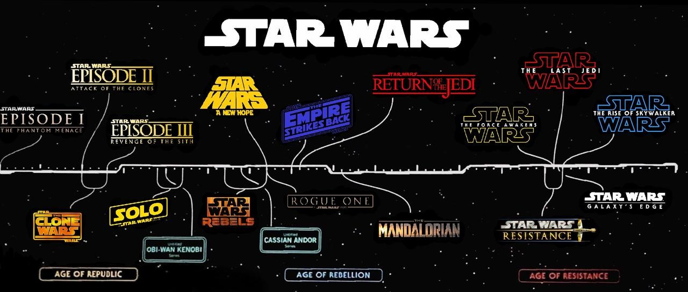
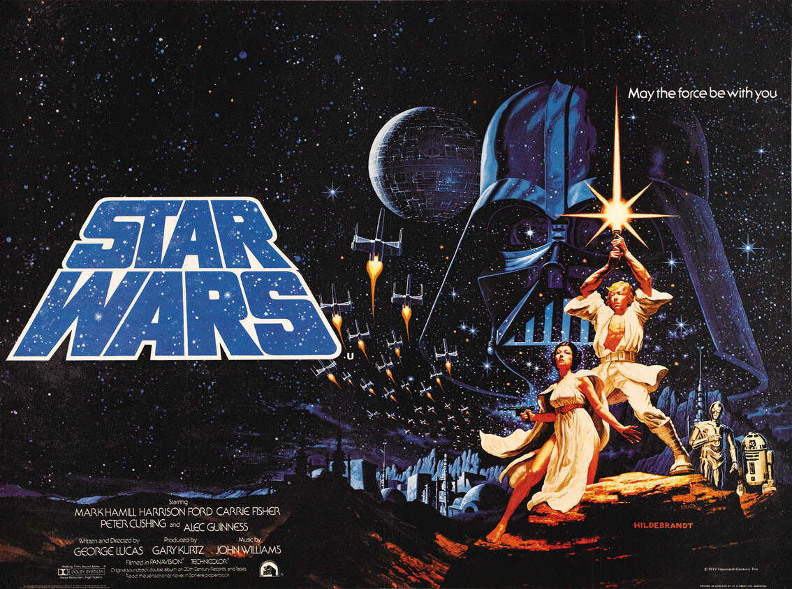
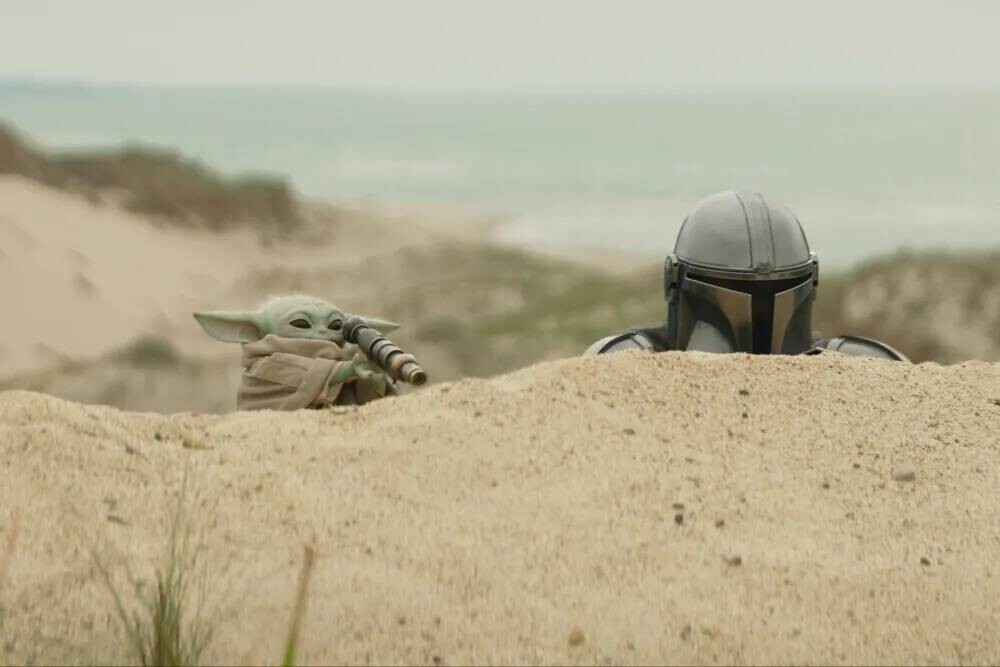

--------------- UNIVERSO CINEMATOGRAFICO ---------------
Con las tres trilogías oficiales de 'Star Wars' terminadas y una nueva resurrección de la saga en forma
de series en Disney+, siempre es un gran momento para volver a ver toda la franquicia y tratar de
encajar todas esas nuevas producciones de camino. Hay algunas formas de volver a visitarlas y hay pros y
contras en todos los diferentes modos. Además, cuando George Lucas lanzó su trilogía de precuelas, el
debate entre los fans sobre el orden en que ver esta serie se ha hecho épico.
Ahora, con la cantidad de spin-offs animados y de acción real, la forma "adecuada" de ver la saga es aún
más complicada. Con todo eso en mente, trataremos de plantear algunos órdenes de visualización útiles ya
seas un fan de toda la vida que quiera volver a ver las películas o un recién llegado en busca de un
curso intensivo de Star Wars.
Además, hay que tener en cuenta todas las producciones que hay en marcha y que recopilaremos al final
del post.
Orden Cronológico Ligero

Aunque la película original se tituló originalmente simplemente 'La guerra de las galaxias' (Star
Wars,
1977) más tarde se modificó para ser conocida como 'Star Wars: Episodio IV - Una nueva esperanza'.
Lo
que significa que el orden en que se estrenaron las películas no es el orden en que suceden los
eventos
representados en la galaxia. Y ahí empiezan los dilemas.
Ver las películas en orden numérico alinea las películas cronológicamente y, como se puede uno
imaginar,
es el orden preferido del creador de la serie George Lucas. Puede ser la opción más obvia, pero no
es
tan divertido, porque arruina el mayor giro de la serie al revelar prematuramente la identidad del
padre
de Luke, un momento icónico de Star Wars. Desde luego, es solo una opción para más veteranos. Con
solo
las series y películas Canon iría así. (la opción más ligera, por supuesto quitando las series
animadas).
Alzamiento del Imperio
- The Acolyte
- Star Wars: Las crónicas Jedi (Tales of the Jedi, 2022) (serie)
- Star Wars Episodio I: La amenaza fantasma
- Star Wars Episodio II: El ataque de los clones
- Star Wars: The clone wars (Serie)
Star Wars: Crónicas del Imperio (Tales of the Empire, 2024) (serie)
- La Remesa Mala T1 (Serie)
- Star Wars Episodio III: La venganza de los sith
- Obi-Wan Kenobi (Serie live-action, 2022)
- Han Solo: Una historia de Star Wars
- Star Wars: Rebels (Serie)
- Andor (2022)
- Rogue One: Una historia de Star Wars'
La rebelión
- Star Wars Episodio IV: Una nueva esperanza
- Star Wars Episodio V: El imperio contraataca
- Star Wars Episodio VI: El retorno del jedi
Nueva república y Primera Orden
- Star Wars: Tripulación perdida (serie)
- The Mandalorian (Serie)
- Ashoka (Serie)
- El libro de Boba Fett (2021)
- Star Wars: Resistance (Serie)
- Star Wars Episodio VII: El despertar de la fuerza
- Star Wars Episodio VIII: Los últimos Jedi
- Star Wars Episodio IX': el ascenso de Skywalker
Orden Estreno

Este es el orden en el que se lanzaron las películas en el cine. El más recomendable a todos los
efectos, por la sencilla razón de que las originales son las culpables de la starwarsmanía, con lo
que
todo lo demás son productos que tratan de rescatar parte de esa magia. Si bien mantiene intacto el
giro
del padre de Luke, la historia general queda raro, puesto que las precuelas quedan en segundo lugar
para
volver a saltar al final de la historia, quizá los niños neófitos en Star Wars se hagan algo de lío.
Las nuevas películas spin off como 'Rogue One' (2016) y 'Han Solo' (2018) quedan descolgados por
tener
lugar entre los originales y las precuelas, pero sirven como anexos para saciar el interés, al igual
que
las series que no tiene mucho sentido colocar en esta lista dado el carácter de largo recorrido de
todas
ellas. El estreno de unas y otras películas podía tener que ver en el momento en el que salieron,
ahora
son un poco intercambiables, pero siempre después o mientras las precuelas.
- Episodio IV: Una nueva esperanza (1977)
- Episodio V: El imperio contraataca (1980)
- Episodio VI: El regreso del Jedi (1983)
- Episodio I: La amenaza fantasma (1999)
- Episodio II: El ataque de los clones (2002)
- Episodio III: La venganza de los Sith (2005)
- Episodio VII: El despertar de la fuerza (2015)
- Rogue One (2016)
- Episodio VIII: Los últimos Jedi (2017)
- Han Solo (2018)
- Episodio IX: El ascenso de Skywalker (2019)
El orden completo de la saga Star Wars
Es es el orden para enfermos de la franquicia o para gente con mucho tiempo libre. Abarca todo, con
todas las películas y series o especiales de la saga 'Star Wars' en orden cronológico pero sin
seguir el canon actual. Esto es, la saga comenzó en 1977, y desde entonces, se han agregado nuevas
trilogías, así como innumerables spin-off en distintos formatos. Cuando Disney compró Lucasfilm
quiso eliminar 30 años de Universo Expandido, con lo que esta es una lista para la verdadera
resistencia.
- The Acolyte 2024
- Star Wars: Las crónicas Jedi (2022)
- Episodio I: La amenaza fantasma (1999)
- Episodio II: El ataque de los clones (2002)
- Lego Star Wars: The Yoda Chronicles (2013 a 2014)
- Lego Star Wars: La amenaza de Padawan (2011)
- The Clone Wars (2008 a 2014)
- Star Wars: The Clone Wars (2002)- no canon
- Star Wars: Crónicas del Imperio (2024)
- La Remesa Mala T1 (2021)
- Episodio III: La venganza de los Sith (2005)
- Obi-Wan Kenobi (Serie live-action, 2022)
- Han Solo (2018)
- Star Wars Rebels (2014 a 2018)
- Andor(2022-2025)
- Rogue One (2016)
- Star Wars: Droides (1985 a 1986) - No canon
- Episodio IV: Una nueva esperanza (1977)
- Star Wars: Especial de vacaciones (1978) - no canon
- Lego Star Wars: The Empire Strikes Out (2012)
- Ewoks (1985 a 1986) - No Canon
- Episodio V: El imperio contraataca (1980)
- La aventura de los ewoks (1984) - No canon
- La batalla del planeta de los Ewoks (1985) - No Canon
- Episodio VI: El retorno del Jedi (1983)
- Lego Star Wars: The Freemaker Adventures (2016 a 2017)
- Lego Star Wars: Droid Tales (2015)
- Star Wars: Tripulación perdida (2024)
- The Mandalorian (2019)
- Ashoka (2023-)
- El libro de Boba Fett (2021)
- Star Wars: Resistance (2018)
- Lego Star Wars: The Resistance Rises (2016)
- Episodio VII: El despertar de la fuerza (2016)
- Episodio VIII: Los últimos Jedi (2017)
- Episodio IX: El ascenso de Skywalker (2019)
- Star Wars: Forces of Destiny (2017)
- Star Wars: Visions (2021-) - antología, alterna cronología
Próximos estrenos del universo Star Wars

Tras unos años centrada en la televisión, la saga galáctica prepara su regreso triunfal al cine en
2026, marcando una nueva etapa para Lucasfilm y los fans. Será con 'The Mandalorian and Grogu', la
continuación de la serie en forma de película, que se estrenará el 26 de mayo de 2026. Después se
estrenará también 'Star Wars: Starfighter', el filme situado cinco años después de los
acontecimientos de 'El ascenso de Skywalker' que protagoniza Ryan Gosling y que veremos en mayo de
2027.
Estos son todos los próximos estrenos que ya han sido anunciados de forma oficial por Lucasfilm y
Disney:
- 'The Mandalorian and Grogu' (Película, 26 de mayo 2026)
- 'Star Wars: Starfighter' (Película, 28 de mayo 2027)
- Nueva trilogía de películas creada por Simon Kinberg (estreno por confirmar)
- Película centrada en Rey (estreno por confirmar)
- Película de James Mangold (estreno por confirmar)
- Película de Dave Filoni (estreno por confirmar)
- Película de Taika Waititi (estreno por confirmar)
- Lando (película) (estreno por confirmar)
- Maul - Shadow Lord (estreno por confirmar)
- Ahsoka, temporada 2 (estreno por confirmar)
- A Droid Story (estreno por confirmar)